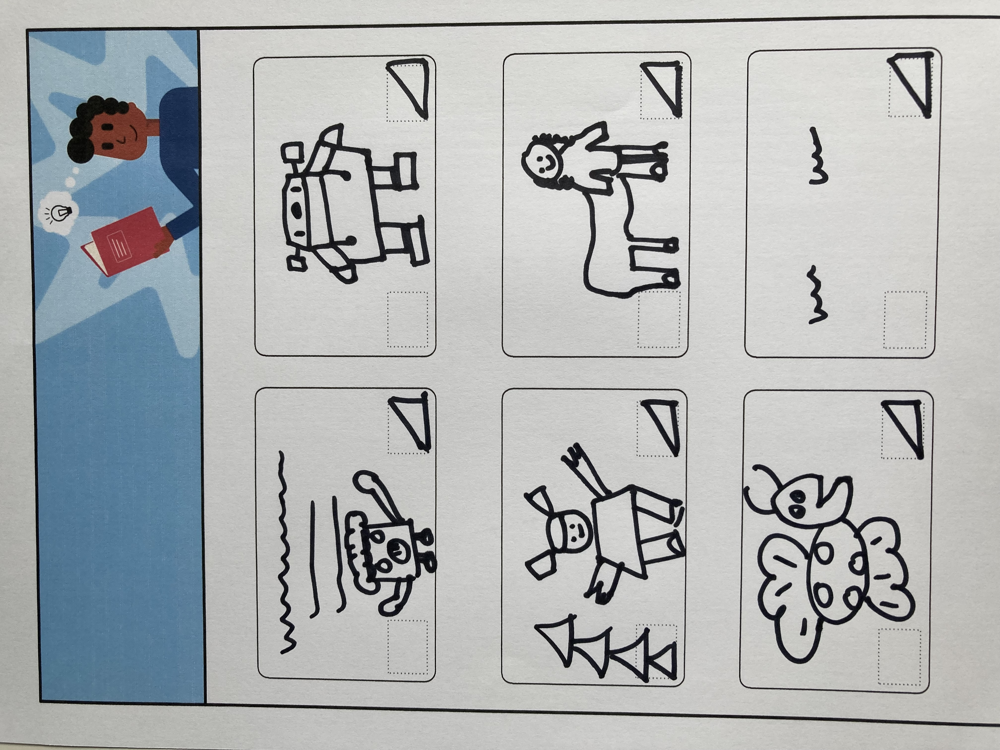
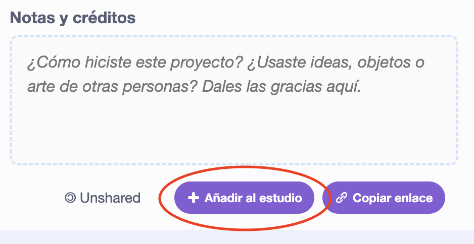
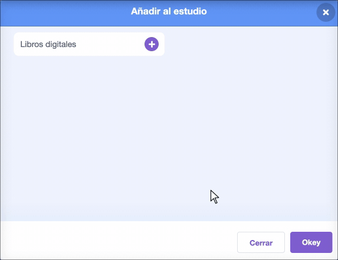

Tu proyecto final: Crea un libro digital
🎯 RESUMEN DEL PROYECTO: Crea un libro digital
Crea un 📚 libro digital en Scratch basado en tu propia idea 💡. Tienes que tener en cuenta lo siguiente:
Tu libro debe cumplir lo siguiente obligatoriamente (para aprobar):
📃Tener varias páginas, con una forma de poder pasar a la página siguiente
🐢Tener por lo menos un objeto o un fondo diseñado completamente por ti con el editor de pintura de Scratch.
💬 Decir o hacer algo diferente en cada página
Tu libro podría también incluir lo siguiente (para subir nota):
🔉Tener efectos de voz o de sonido
🎨 Tener más texto o arte creado en el editor de dibujo
🖱️ Tener funciones interactivas en cada página
Para que entiendas de qué estilo tiene que ser tu libro, te dejo varios ejemplos a continuación, algunos muy simples y otros que están muy trabajados. Como siempre, pulsa en Ver dentro para ver cómo están hechos y estudiar su código:
Ilumina el camino a casa
Gato de Scratch se camufla
Una historia de depuración
Haz clic en el personaje y el objeto para elegir los que quieras agregar a la historia, luego haz clic en el escenario para pasar la página.
Accidental Teleportation
Aunque este proyecto está en inglés, es un ejemplo de una historia muy trabajada y, de hecho, es un proyecto destacado de la comunidad Scratch. Puedes ver que tu historia puede ser todo lo intrincada que quieras.
How winter came
Otro proyecto que está en inglés pero que es muy interesante para tomar ideas. También es un proyecto destacado de la comunidad.
Tu idea
Un libro digital 📖📲 (o libro electrónico) es un libro creado para leerse en una computadora, tableta, teléfono móvil, u otro dispositivo electrónico. ¿Has leído algún libro en un dispositivo digital?
Decide el tema de tu libro y a qué audiencia irá dirigido.
¿Por qué estás creando un libro?
Piensa en el propósito de tu libro digital. Podría ser:
- Para entretener a un niño muy pequeño
- ♻️ Para compartir un mensaje importante, como fomentar el reciclaje
- 🍕 Para enseñarle a alguien cómo hacer algo, como preparar su comida favorita
- 📖 Para contar o volver a contar una historia
- 🗣️ Para compartir algo sobre ti
- 🎨 Para expresarte y ser creativo
- ¡O algo más!
¿Para quién está destinado?
Piensa para quién harás tu libro (tu audiencia). Podría ser:
- 👧 Para un amigo
- 👴 Para un familiar
- 👩🎓 Para una clase escolar
- 🏇 Para personas que comparten un pasatiempo
- 👨🎤 Para fanáticos de un músico
- Para otra persona o ¡simplemente para ti!
Planifica tu libro
Antes de crear tu proyecto de Scratch, vas a usar una técnica muy utilizada en la planificación de piezas visuales como películas, cortometrajes, videoclips, etc. El guión gráfico o "storyboard".
Lo que vas a hacer es dibujar en papel las escenas (páginas) de tu libro, de forma esquemática, antes de empezar a desarrollarlo.
En este documento tienes un esquema para realizar el storyboard. No hace falta que lo imprimas porque, como ves, es muy simple. Solo tienes que seguir ese esquema en un página de tu cuaderno, dejando espacio para varias "pantallas".
Tu storyboard no tiene que ser una obra de arte, solo un boceto que te sirva de guía para cuando vayas a crear tu libro. Podría tener un aspecto parecido a esto:

Tampoco es necesario usar las seis pantallas. Puedes tener más o menos, según el alcance de tu historia.
Puedes añadir en tu storyboard indicaciones escritas sobre cosas que ocurran en la pantalla o sobre acciones que pueda hacer el usuario si piensas introducir interactividad. Imagina que le pasarás el storyboard a otro compañero o compañera para que haga tu historia en Scratch. Debería estar lo más completo posible para que el resultado final sea como tú quieres, ¿verdad?
Cuando hayas terminado el storyboard, escanéalo con ayuda de tu dispositivo móvil y añádelo en PDF a la tarea de Google Classroom.
Alternativa: plantilla con tablas
Si prefieres organizar tu idea con tablas en vez de dibujar el storyboard en papel, puedes usar esta plantilla digital. Elige el método que prefieras (el storyboard en papel o esta plantilla): no hace falta hacer los dos.
Escenas (añade tantas filas como necesites):
| Nº | Fondo / escenario | Qué ocurre | Cómo se pasa a la siguiente escena |
|---|---|---|---|
| 1 | |||
| 2 | |||
| 3 |
Personajes:
| Personaje | Disfraces necesarios | Qué dice o hace | ¿En qué escena(s) aparece? |
|---|---|---|---|
Interacción: ¿qué puede hacer quien lea tu libro? Por ejemplo: hacer clic para pasar de página, hacer clic en un personaje para que reaccione, elegir entre opciones, pulsar una tecla…
Igual que con el storyboard en papel: cuando termines tu plan (con tablas o dibujado), añádelo a la tarea de Google Classroom.
Construye y prueba
🎯 RESUMEN DEL PROYECTO: Crea un libro digital
Crea un 📚 libro digital en Scratch basado en tu propia idea 💡. Tienes que tener en cuenta lo siguiente:
Tu libro debe cumplir lo siguiente obligatoriamente (para aprobar):
📃Tener varias páginas, con una forma de poder pasar a la página siguiente
🐢Tener por lo menos un objeto o un fondo diseñado completamente por ti con el editor de pintura de Scratch.
💬 Decir o hacer algo diferente en cada página
Tu libro podría también incluir lo siguiente (para subir nota):
🔉Tener efectos de voz o de sonido
🎨 Tener más texto o arte creado en el editor de dibujo
🖱️ Tener funciones interactivas en cada página
Para que entiendas de qué estilo tiene que ser tu libro, te dejo varios ejemplos a continuación, algunos muy simples y otros que están muy trabajados. Como siempre, pulsa en Ver dentro para ver cómo están hechos y estudiar su código:
Ilumina el camino a casa
Gato de Scratch se camufla
Una historia de depuración
Haz clic en el personaje y el objeto para elegir los que quieras agregar a la historia, luego haz clic en el escenario para pasar la página.
Accidental Teleportation
Aunque este proyecto está en inglés, es un ejemplo de una historia muy trabajada y, de hecho, es un proyecto destacado de la comunidad Scratch. Puedes ver que tu historia puede ser todo lo intrincada que quieras.
How winter came
Otro proyecto que está en inglés pero que es muy interesante para tomar ideas. También es un proyecto destacado de la comunidad.
Depura
Durante las pruebas es posible que te vayas encontrando errores variados que tienes que corregir.
A continuación, te muestro algunos errores comunes por si te aparecen:
Un objeto se muestra u oculta en las páginas incorrectas
Comprueba que el objeto tenga el evento cuando el fondo cambie a con bloques mostrar o esconder según sea necesario.
Comprueba que hayas elegido el nombre de fondo correcto en el bloque cuando el fondo cambie a. Es útil darle a los fondos nombres que puedas entender fácilmente, para ayudar a detectar problemas como este.
Un objeto se pone boca abajo
Agrega un bloque fijar estilo de rotación a izquierda-derecha o fijar estilo de rotación a no rotar, según sea el comportamiento que busques.
Un objeto 'salta' cuando cambia de vestuario o rebota
Asegúrate de que el disfraz esté centrado en el editor de dibujo (alinea la cruz azul del disfraz con la cruz en el centro del editor).
No se reproduce un sonido
¿Has agregado un bloque iniciar sonido cuando sea necesario?
Si has copiado el código de otro objeto, le deberás agregar el sonido a este en la pestaña Sonidos.
Verifica el volumen de tu ordenador (si tiene altavoces) y asegúrate de no haberlo bajado con el código; prueba fijar volumen al 100%.
Un objeto tapa a otro que debería estar delante
Agrega un bloque ir a capa delantera al objeto que debe verse por delante, o bien agrega un bloque ir a capa trasera al objeto que deba verse por detrás.
Un objeto solo se mueve o cambia una vez
Si el objeto debe moverse todo el rato, pon tu código dentro de un bloque por siempre para que siga funcionando.
Las páginas están en el orden incorrecto
Verifica en qué orden están tus fondos: haz clic en el panel escenario y luego en Fondos para ver los fondos de tu proyecto. Reordénalos arrastrando si es necesario.
Comparte tu libro con tus compañeros
Con este proyecto ya has terminado esta Situación de Aprendizaje. Además de entregar el enlace al proyecto en la tarea de Google Classroom y, por fin, entregar la tarea, tienes una última misión: vas a compartir tu trabajo con un estudio de la clase llamado "Libros digitales". Así, tus compañeros podrán ver e interactuar con tu libro, así como tú podrás ver los de ellos.
Para añadir tu proyecto al estudio tienes que ir a la página del proyecto y pulsar en el botón Añadir al estudio (está junto al que usas para copiar tu enlace)

Cuando lo pulses, te aparecerá en una ventana el estudio "Libros digitales", solo tienes que hacer clic en él y se marcará en verde, indicando que ya has añadido tu proyecto al estudio de la clase:
